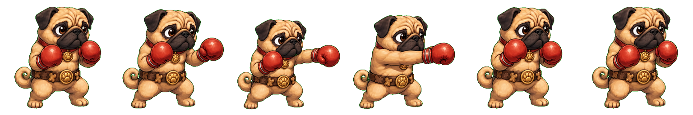
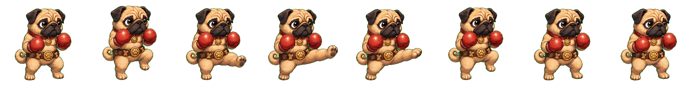

PASS: source-only light-punch and light-kick rows accepted for T034.
Exact 1536x256 alpha spritesheet. Compact jab, stable guard, no heavy/special read, no baked effects.

Exact 2048x256 alpha spritesheet. Controlled low-to-mid starter kick, non-acrobatic, stable pug traits.

Idle body height is 228px. Light-punch body heights are 201-227px because the jab pose tucks the body; light-kick body heights are 212-222px. The earlier jump row is flagged for corrective replacement because it shrinks to 144-158px.
No public/assets/generated/fighters/pugilist-pug folder is introduced; Pickles remains non-playable.